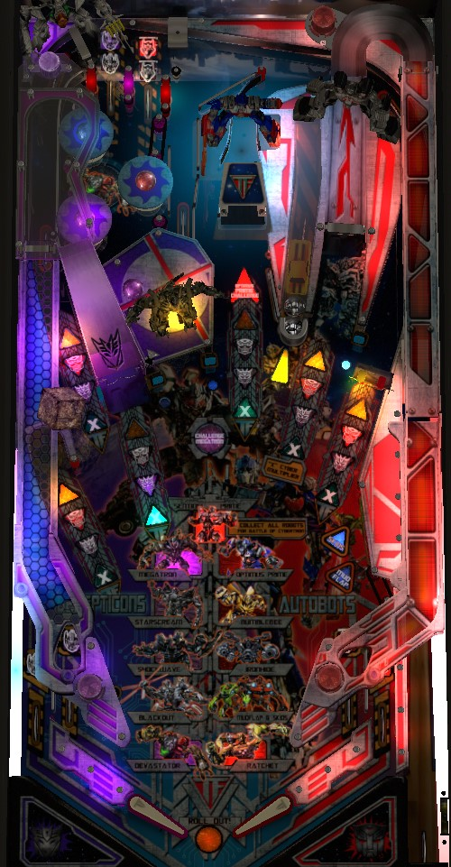

This guide discusses the Pro model of Transformers only. Information specific to the Limited Edition versions of the game will be either added to this guide or included in a separate guide linked to this one at a later date. This guide does not discuss Transformers The Pin, a home-use game released by Stern in 2012.
At the start of the game, choose to play the Decepticon game with the left flipper or the Autobot game with the right flipper. Decepticons focuses on the left side of the playfield, has a slightly easier way to earn shot multipliers, and lets you play high-value modes sooner. Autobots focuses on the right side of the playfield and is slightly more multiball-oriented, featuring the only multiball main mode (Mudflap + Skids) as well as offering considerably higher scoring in Optimus Prime multiball (center lane). Earn shot multipliers by completing your team's lights at the in/out lanes and top lanes. Start modes by shooting any four of the six major shots; bumpers change which mode is played next; always try to complete modes, but this usually requires playing each mode multiple times.
Choosing Decepticons or Autobots at the start of the game is referred to throughout this guide as playing the "Decepticon game" or the "Autobot game" to avoid confusion. The words "your team" and "opposite team" are also used at times to easily refer to the game that you picked, or the game that you did not pick.
The phrase "six major shots" refers to the shots with 4 triangular inserts in front of each of them: the "Allspark mystery cube" left saucer, the left orbit, the left ramp, the Optimus Prime center lane, the right ramp, and the right orbit.
When the game begins, you are prompted to choose team Decepticons with the left flipper or team Autobots with the right flipper before plunging the first ball. Game rules change slightly depending on who you pick; Decepticons focus on shots on the left side of the playfield and feature higher-value modes, while Autobots leans toward the right half of the playfield and scoring in multiballs. The rules advantages and disadvantages of each are slight, though, so you should choose the side corresponding to whichever shots you're more comfortable making. The Decepticons side of the playfield has a wider and easier ramp, but a narrower, harder orbit shot.
Transformers has two flavors of skill shots.
An even shorter plunge that does not make it all the way around the right orbit can come down through the spinner and reach the flippers that way. This is not a skill shot, just an alternate way to plunge, though there's no reason to ever do so.
Each team has 4 symbols: one in lane, one out lane, and two of them above one of the two top lanes. Roll through an unlit lane to light it. The left flipper operates lane change on the four Decepticon symbols in the left in lane, left out lane, and left top lane. The right flipper operates flipper lane change for the four Autobot symbols, in the same places on the right. Lighting all 4 of your team's symbols qualifies the ability to place a shot multiplier at any of the game's 6 major shots. The green Xs in front of the major shots will start flashing to indicate this. The next shot made to a flashing X will light it solidly, indicating that all scoring from that shot is worth 2x for the rest of the current ball. Completing your teams symbols again allows another multiplier to be placed at a different shot. You cannot place multiple shot multipliers at the same shot, and all multipliers are 2x to start. If you complete your team's symbols 6 times, the 6th shot multiplier will be placed for you automatically, since there's only one place it can go. If you complete your team's symbols a 7th time, a 3x shot multiplier indicated by a flashing X symbol will automatically move back and forth across the playfield. There is no further progression past this point. All shot multipliers are lost at the end of the ball. Shot multipliers affect all scoring at the shot in question, which can include multiball jackpots and super jackpots.
Completing a set of the opposite team's 4 symbols advances the end of ball bonus multiplier.
If you play the Decepticon game, it's slightly easier- if more tedious- to grind out shot multipliers by constantly shooting the left ramp to feed the left in lane, since the left ramp can usually be hit from either flipper. Some copies of Transformers even make it possible to immediately trap the ball on the left flipper as it comes down the left in lane, allowing the left ramp to be looped with just one flipper. For Autobots players, the right ramp can sometimes be backhanded, but it's a difficult enough shot with either flipper that it's usually safer to focus on using the right orbit to get back to the top lanes as a method of earning Autobots symbols.
The best places to put the first two shot multipliers are generally the Optimus Prime center lane and the right orbit. Depending on your play style, you may choose to prioritize putting a multiplier on the left ramp (especially if you're using it to earn Decepticon symbols) or the Allspark left saucer (especially if you've completed multiple main modes and have a chance at playing Sentinel Prime or Battle for Cybertron). The left orbit and right ramp generally turn out to be the least valuable shots to multiply.
A full shot to the captive ball, located between the Optimus Prime center lane and the right ramp, will cause the yellow car toy to hit a standup target at the end of its lane, which scores a letter in the word Bumblebee. Spell Bumblebee to start 40 seconds of 2x scoring everywhere in the game. Completing Bumblebee again within the 40 seconds just restarts the timer; the timer cannot go above 40 seconds and the playfield multiplier cannot go higher than 2x. Bumblebee Double Scoring does stack with shot multipliers, giving the major shots a possible effective multiplier of 4x or 6x during those 40 seconds. Draining while Bumblebee Double Scoring is active does not double the end of ball bonus, to my knowledge.
NOTE: all listed score values in this guide assume that there are NO multipliers in effect on the shot or playfield.
Transformers has 2 main multiballs: Megatron Multiball and Optimus Prime Multiball. Both multiballs can be played at any time, regardless of what team you chose at the beginning of the game. However, each multiball has two rulesets: one easy and one hard. If you are playing the Decepticon game, Megatron Multiball will have its easy rules, and Optimus Prime Multiball will have its hard rules. The opposite will be true if you chose the Autobot game. Both rulesets are discussed in the corresponding sections below. A multiball cannot be started while the opposite multiball is running, and main modes cannot be started while multiball is running either; however, it is possible to start a main mode, then start one of the two major multiballs.
"Completing" a multiball is defined as scoring a super jackpot. Multiballs that have been started but not completed will flash in the mode grid on the playfield, and multiballs that have been completed will be lit solidly.
To start Megatron Multiball, you need to lock 4 balls at the Megatron hole located immediately to the right of the left ramp. If the pink Challenge Megatron insert in front of the hole is lit, a lock is available. For the first Megatron Multiball, all 4 locks are lit right away. For the second Megatron Multiball, you must hit the 3 blue post targets (one on either side of the Megatron hole, and one to the right of the right ramp) to light all 4 locks. For the third Megatron Multiball onwards, a completion of the blue post targets is required for each individual lock.
Megatron Multiball starts by firing all 4 locked balls out of the Megatron hole at an incredibly high speed, one after the other. Luckily, if you don't get control of one of the balls, there is a ball saver at the start of this multiball to help you recover.
If you are playing Megatron Multiball as a Decepticon: all 6 shots start lit for Jackpot. Jackpots start at 100,000 points, increasing by 50,000 each time up to 250,000. Shoot the Megatron hole at any time to relight all jackpots. Megatron's hole always scores a jackpot on its own, but this always scores 100,000 points regardless of what the current normal jackpot value is. After 10 total jackpots, shoot the Optimus Prime lane three times- the first two score Double Jackpots worth 500,000 points, and the third scores a Super Jackpot of 1,000,000 points which resets the multiball progression.
If you are playing Megatron Multiball as an Autobot: the only jackpot that is lit to start is the Megatron hole, which scores 125,000 points. Making the Megatron hole lights all 6 major shots for jackpots, but only for about 7 seconds. Each jackpot made during this time has a base value of 25,000 more than the previous one, but they are awarded as double jackpots, so their value is 300,000, then 350,000, etc. When the double jackpots unlight, the base jackpot value is reset back to 125,000. After 10 total jackpots- with single jackpots and double jackpots all counting as one each- shoot the Megatron hole for a super jackpot equal to the sum of the last 10 jackpots added together. Remember that single and double jackpots are affected by shot and playfield multipliers, which in turn helps compound the super jackpot too; however, the super jackpot cannot be multiplied because the Megatron hole cannot have a shot multiplier. After making a super jackpot, the sequence resets, but the base value for single jackpots increases to 225,000- so for the second lap through the progression, shoot Megatron for 225,000, then double jackpots score 500,000, then 550,000, etc.
To start Optimus Prime Multiball, first take 4 shots at the center lane. For these shots, the retractable ramp will be down, turning the center lane into a half-loop that comes down the right orbit. After 4 center lane shots, the retractable ramp raises, and you now need to shoot the mini-ramp to physically hit the Optimus Prime toy above the center lane. For the first Optimus Prime Multiball, this requires 4 shots; that requirement increases by 2 each time Optimus Prime Multiball is replayed. Once Optimus Prime has been hit enough times, Multiball begins, with balls plunged to the playfield until there are 3 balls in play (or 4 if the Mudflap + Skids mode is currently running).
If you are playing Optimus Prime Multiball as a Decepticon: All 6 major shots are lit for a Jackpot worth 150,000 to start. After collecting a Jackpot, the only shot that is lit is the center lane with the mini-ramp raised; you must shoot the Optimus Prime toy to score a double jackpot. Then, all major shots relight except for the one(s) where you have earned a regular jackpot already, including the center lane itself. You must earn 6 pairs of jackpots in this way, where the first in each pair is a single jackpot at one of the remaining lit major shots, and the second in each pair is a double jackpot from hitting Optimus Prime. After making the 6 pairs of jackpots, shoot Optimus Prime one more time to score the Super Jackpot, which is worth the sum of the previous 12 jackpots times the center lane's shot multiplier. After scoring the Super Jackpot, the entire sequence resets, with 6 more pairs of jackpots required for another Super; each Super Jackpot collected in a single multiball increases the base jackpot value by 100,000 points, so jackpots and double jackpots are worth 250,000 and 500,000 respectively as you work toward your second Super Jackpot.
If you are playing Optimus Prime Multiball as an Autobot: the same principle applies as if you were playing in Decepticon mode, with 6 pairs of jackpots being required, and the first jackpot in each pair coming from a different one of the 6 major shots. However, when playing the Autobot game, the second jackpot of each pair needs to be collected at the same major shot as the first jackpot in each pair, and the Super Jackpot is at the Megatron hole, not the center lane. All scoring values are otherwise equal.
If you enter either main multiball with the Allspark Mystery lit at the left lane, then one time per multiball, the mystery will award "add-a-ball" which refreshes the multiball back to the number of balls it started with (4 balls for Megatron, 3 balls for Optimus Prime, or 4 balls for an Optimus Prime plus Mudflap + Skids stack). Be careful not to collect this award right away if possible, because it's wasted if the current multiball already has the maximum allowable number of balls on the playfield. The blue post targets that normally relight the Allspark mystery when completed do not do so during main multiballs, so you must light Allspark Mystery before entering if you want to take advantage of this add-a-ball.
It is technically more valuable to play the multiball that does not belong to the team you chose, in both cases. Megatron Multiball as a Decepticon limits the Super Jackpot to a value of 1,000,000 points times shot multiplier, while Megatron Multiball as an Autobot does not limit the Super Jackpot, which usually ends up being worth more even though the Megatron hole cannot have a shot multiplier. Optimus Prime Multiball as an Autobot has its Super Jackpot collected at Megatron, which cannot have a shot multiplier, but Optimus Prime Multiball as a Decepticon has its Super Jackpot collected at the Optimus Prime toy, whose value is affected by center lane shot multipliers.
Transformers has a total of 8 main modes, but only a subset of them are available at a time. All modes have a completion criteria. If a mode has not been played at all, it will be unlit on the playfield. If a mode is flashing slowly, that means it has been started, but not completed. If a mode is flashing quickly, it is the currently selected mode and will be started the next time a mode is qualified, or it is the mode currently in progress and it has not yet been completed. If a mode is solidly lit, it has been completed. The progression of which modes are available when works as follows:
When no mode or multiball is running, it takes a total of 4 shots to any lit major shot on the playfield to start a mode. When you shoot a lit shot, that shot unlights. If there would be fewer than 3 lit shots as a result, an unlit shot will relight. The game seems to heavily prioritize lighting ramps and orbits as opposed to the center lane or Allspark left lane. If you just completed a mode by making a ramp or orbit shot, the game will also count that shot as the first step toward starting the next mode, so it will only take 3 lit major shots to begin the next mode. Pop bumpers change which mode is selected; the easiest way back to the pop bumpers is to shoot the right orbit to reaccess the top lanes.
Mode completion requirements are very difficult and not intended to be done on the first time playing a mode. If a mode has been played but not completed, it cannot be replayed until all modes in the current set have been played at least once. If a mode has been completed, it cannot be replayed at all unless you make it all the way to Battle for Cybertron wizard mode and reset the entire progression.
Most modes are timed. If you light the Allspark mystery award at the left lane by completing the blue post targets, the Allspark will always give More Time as an award once per mode attempt, which usually adds 15 seconds to the current mode timer.
Mode rules are described below. Mode rules are always the same whether you are playing as a Decepticon or an Autobot. Modes are listed below as the appear on the playfield: top to bottom Decepticons, then top to bottom Autobots.
Starscream is a 45-second timed mode that asks you to make 10 shots. It is both the most involved and the least valuable of the Decepticon modes. For shot 1, the Allspark left lane and the left orbit are lit. Making one of these causes the two lit shots to move one step to the right; shot 2 requires making the left orbit or left ramp; shot 3 requires making the left ramp or center lane, shot 4 requires making the center lane or right ramp, and shot 5 requires making the right ramp or right orbit. Now that you've "walked" across the playfield, you're halfway done: for the remaining 5 shots to complete the mode, you need to shoot what's lit, and "what's lit" is a pair of adjacent shots lit with an orange triangle that move back and forth across the playfield on their own every few seconds. Scoring in Starscream is pretty pitiful compared to other modes: the first shot is worth 100,000 points, and each subsequent shot is worth 12,500 more than the previous one. If Starscream is not completed in time, your progress toward the 10 shot requirement is saved, but the shot value will be reset to 100,000 plus 12,500 for each time you've replayed the mode.
Shockwave is a 45-second timed mode that asks you to make 11 shots. The first shot must be to the Allspark left lane. The second shot must be to the right ramp. The remaining 9 shots can be earned at any major shot in the game, except for whichever shot was most recently used for mode credit (so you can't backhand a ramp or loop the left orbit 9 times in a row to complete the mode). The first shot scores 200,000 points, and each subsequent shot scores 25,000 more than the previous one. If you do not complete Shockwave in time, your progress toward the 11 shot limit is saved for when you replay the mode, but the shot value will be reset to 200,000 plus 25,000 for each time you've replayed the mode.
Blackout is a 45-second timed mode that asks you to make 11 shots. The first shot must be to the Allspark left lane. The second shot must be to the Optimus Prime center lane. Shot 3 can be either the left lane or left orbit. Shot 4 can be either the center lane or right ramp. Starting with shot 5, all odd-numbered shots can be made to anything on the left half of the playfield (Allspark lane, left orbit, left ramp), and all even-numbered shots can be made to anything on the right half of the playfield (center lane, right ramp, right orbit). The first shot scores 200,000 points, and each subsequent shot scores 50,000 more than the previous. If you do not complete Blackout in time, then when you replay it, the shot value will be reset to 200,000 plus 50,000 for each time you've replayed the mode; however, your progress toward the 11 shots is saved across attempts.
Devastator requires 10 shots broken up into 5 pairs. Each pair requires shooting the right orbit, then the Allspark left lane. You have 20 seconds to complete each pair. The timer can go above 20 seconds thanks to the Allspark mystery award, but when a new pair begins, the timer is always reset to exactly 20 seconds. The first right orbit shot scores 100,000 points; each subsequent shot in the mode scores 100,000 more than the previous. If you do not complete Devastator in time, then when you replay it, the shot value will be reset to 100,000 plus 50,000 for each time you've replayed the mode, but your progress toward the 10 shots is saved across attempts. Devastator is likely the hardest mode to complete since the right orbit always feeds the pop bumpers and the timer does not stop while the ball is in the pop bumpers.
Bumblebee is a hurry-up mode. The hurry-up starts at 750,000 points and counts down to 100,000 over the course of about 25 seconds. In this time, the game wants you to hit the 6 major shots in any order once each. The value of each shot is equal to whatever is left on the hurry-up score countdown. If you receive More Time from the Allspark mystery award, it will reset the hurry-up back to 750,000 points. Once you make all 6 shots, you have 15 seconds to shoot the captive ball to score the Bee Jackpot, which is equal to the sum of all of the shot values made during that attempt at Bumblebee mode. That last sentence was worded very carefully, because if you drain or run out of time during Bumblebee mode, the number of shots you made is remembered for the next time you play Bumblebee, but the Bee Jackpot will be reset, meaning the payout for winning this mode is drastically reduced if you don't do it in one try.
Ironhide requires 10 shots broken up into 4 groups. Group 1 is a single shot to the center Optimus Prime lane. Group 2 is the two ramps. Group 3 is both orbits and the center lane. Group 4 is both ramps and both orbits. You have 25 seconds to complete each group. The very first shot scores 200,000 points, and each subsequent shot scores 50,000 more than the last. Like with other 10- or 11-shot modes, if you drain or time out, your number of shots is remembered but the base value will reset to 200,000 plus 50,000 per replay attempt when you try Ironhide again.
Mudflap + Skids is a 2-ball multiball that asks you to make 11 shots. At first, all 6 major shots in the game are lit. Making a lit shot unlights it. Unlighting all 6 shots will relight all of them, at which point you can now pick off the last 5 remaining shots. The first shot scores 250,000 points, and each subsequent shot scores 50,000 more than the previous. If you drain back into single ball play, your shot count is remembered, but the shot value for the next attempt is reset to 250,000 plus 50,000 for each time you've replayed the mode. When you complete Mudflap + Skids, you can continue working through "waves" of the 6 major shots until you drain into single ball play, with each lit shot scoring the same value as the shot that you used to complete the mode.
Mudflap + Skids is frequently used strategically toward lighting other features. Since it is an untimed multiball mode, a valid strategy is to ignore the rules of Mudflap + Skids altogether and use the 2-ball quick multiball as a safety net to do dangerous things like shoot the Optimus Prime center lane toward starting Optimus Prime Multiball, or shooting the blue post targets to qualify locks for Megatron Multiball. If Optimus Prime Multiball is started while Mudflap + Skids was already running, you'll be able to play Optimus Prime Multiball with 4 balls instead of 3, which is otherwise impossible.
Ratchet is a 45-second mode that asks you to make 11 shots. At first, all 6 major shots in the game are lit. Making a lit shot unlights it. Unlighting all 6 shots will relight all of them, at which point you can now pick off the last 5 remaining shots. The first shot scores 100,000 points, and each subsequent shot scores 50,000 more than the previous. Yes, this is the exact same rules as Mudflap + Skids, but as a timed single-ball mode instead of a quick 2-ball multiball. If you drain or time out, your progress on the number of shots is saved, but the shot value is reset...you know the drill by now.
After completing all 4 modes and the multiball that belong to the team you chose at the beginning of the game, the Allspark left lane will begin flashing furiously as long as there is no mode or multiball running. Shoot it to start Sentinel Prime mini-wizard mode, which is referred to by the game as "Autobots Roll Out" if you are playing as an Autobot or "All Hail Megatron" if you are playing as a Decepticon. However, the rules are always the same.
Sentinel Prime is a single-ball untimed mode that wants you to make 12 shots: two to each of the six major shots in the game. You can work through these 12 shots in any order you like. The first shot scores 500,000 points, and each subsequent one scores 50,000 more than the previous, up to a maximum of 1,050,000 for the 12th shot. After making the 12 shots, shoot the Allspark left lane for a super jackpot equal to the sum of the 12 shot values you made throughout the mode to that point. Remember that if a shot has a multiplier, the multiplied value is added to the super jackpot; the super jackpot itself can also be multiplied if there is a shot multiplier at the Allspark left lane. A completed Sentinel Prime is generally worth at least 20,000,000 points, though this can be much more if you are precise about only making shots when high multipliers are lit or by starting Bumblebee Double Scoring during this mode. If you drain during Sentinel Prime, the entire mode ends and it cannot be replayed unless you get all the way to Battle for Cybertron, start a second loop through the game, and work your way back to Sentinel Prime naturally. Regardless, once Sentinel Prime ends, you now have access to the 4 main modes that belong to the team that you did not choose at the start of the game. Complete their modes too to work your way toward Battle for Cybertron, the game's true wizard mode.
After completing all 8 modes and both main multiballs, the Allspark lane will once again flash furiously once all modes and multiballs are over. This time, it's lit for Battle for Cybertron, the game's true wizard mode. Just like Sentinel Prime, this mode has identical rules regardless of whether you're playing as an Autobot or a Decepticon.
Battle for Cybertron is very similar to Sentinel Prime: make all of the flashing shots on the playfield, which score 500,000 the first time and increase by 50,000 with each subsequent shot. This time, though, each of the 6 major shots needs to be hit 3 times, and instead of being a single-ball mode, Battle for Cybertron is a 3-ball multiball with a generous ball save. Once all 18 shots have been made, shoot the Allspark left lane to score a super jackpot equal to the sum of all 18 shot values you collected, times whatever shot multiplier is at the Allspark. It's not unheard of for this super jackpot to exceed 100,000,000 points. Battle for Cybertron doesn't add after collecting a super jackpot like Sentinel Prime did, though- you can repeat this process as many times as you want as long as there are at least 2 balls in play. Collecting a super jackpot and starting a new "lap" through Battle for Cybertron does reset the shot value back to 500,000. Once Battle for Cybertron multiball ends, the entire game progress is reset, wiping out your completions for all 8 modes and both multiballs, and you can play through the whole game again.
Fast Scoring is this game's name for a frenzy mode. To start Fast Scoring, hit either the Mudflap or Skids standup targets in the lower right until the display says Fast Scoring Ready, then hit either target one more time. The first Fast Scoring requires 9 hits to advance to Fast Scoring Ready, and the base value of the frenzy is 10,000 points. Each subsequent play of Fast Scoring requires one more hit than the previous and has a starting frenzy value 5,000 points higher than the previous. Fast Scoring is a 25-second mode where every switch in the game scores the current frenzy value. During Fast Scoring, you can continue to shoot the Mudflap and Skids standup targets; hit a flashing target to unlight it. Hitting one target in the pair adds 1,000 points to the frenzy value. Hitting the other target in the pair adds 10 seconds to the Fast Scoring timer (up to a maximum of 90) and relights both targets. If there is a maximum frenzy value, it is at least 32,000 points per switch. There is a very long grace period when Fast Scoring's timer expires where additional switches can still score the frenzy value and target hits can still advance the frenzy value or extend the timer.
Starting all 4 different main modes of the team you first selected lights an extra ball that is collected at the right orbit...I think. I do not know how many points extra ball may be worth in competition play; I would expect a value in the 3,000,000-5,000,000 range to be reasonable.
The first pop bumper scores 3,000 points. Each subsequent pop bumper scores 1,000 more than the previous, up to a maximum of 20,000 points per bumper. The pop bumper value resets whenever the ball leaves the pop bumper area. Each bumper hit also rotates the currently selected mode.
Hit a flashing blue post target to light it; there are three in total, with one on either side of the Megatron hole and one between the right orbit and right ramp. Lighting all 3 targets lights the Allspark cube in the left lane for a mystery award. Multiple qualified mystery awards can be stacked and held in memory if the blue post targets are completed multiple times before the left lane is made.
The mystery award tries very hard to give you something helpful in your current situation: it will almost always give More Time the first time a mystery is scored while a main mode is running, and it will almost always give Add-A-Ball (effectively restarting the multiball) the first time a mystery is scored while a major multiball is running. Some of the awards I've seen the mystery give when no mode or multiball is running include:
Transformers has a conventional in/out lane setup. The left in and out lane house two of the four Decepticon symbols, and the right in and out lane house two of the four Autobot symbols.
Bonus is calculated as a count of switch hits; I do not know the exact formula. Bonus multiplier is advanced by completing the 4 symbols of the team you did not select at the beginning of the game, or from a Allspark mystery award. If there is a max bonus multiplier, it is at least 13x. Bonus tends to have decent but not overpowering value; it's worth not tilting, especially after a long ball. There is no mid-ball bonus collect; base bonus and bonus multiplier can only be held over by collecting HOld Bonus or Hold Bonus X from the Allspark mystery award.
| If you need... | Try... |
| 500,000 points | ...making a skill shot, accessing the top lanes/bumpers, or starting a main mode. |
| 2,000,000 points | ...completing most or all of a main mode, starting a main multiball, or starting Fast Scoring. |
| 5,000,000 points | ...completing a main mode in one attempt, or playing a main multiball with some shot multipliers or Bumblebee Double Scoring active. |
| 15,000,000 points | ...playing a main multiball other than Megatron Multiball as a Decepticon with the goal of earning a Super Jackpot. It's especially helpful to have multiple shot multipliers in play to crack eight figures in a multiball. |
| 30,000,000 points | ...focusing especially hard on shot multipliers, getting the roving 3x shot multiplier lit, and powering through modes or playing a multiball whose Super Jackpot is at the Optimus Prime shot, which can be multiplied. |
| 75,000,000 points or more | ...making multiple laps through a main multiball with all shot multipliers lit, or making a serious attempt at playing Sentinel Prime or Battle for Cybertron wizard modes. |